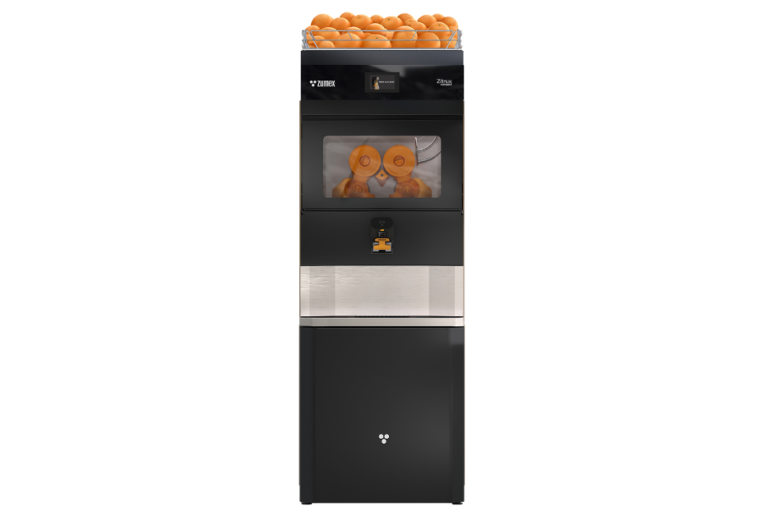

Zitrux Compact
Samočisticí technologie Zitrux v kompaktním provedení. Navržena pro obchody, které chtějí nabídnout čerstvou šťávu a efektivně využít prodejní plochu.
Cenu a dostupnost vám potvrdíme podle konfigurace.
Co Zitrux Compact umí
Zitrux Compact přináší samočisticí technologii do menšího prodejního prostoru. Půdorys 0,46 m² usnadňuje umístění v supermarketu i menší prodejně, přitom stroj zvládá až 40 plodů za minutu.
Horní automatický podavač umožňuje zpracovat až 30 kg ovoce bez přerušení. Uzavřený lisovací prostor a volumetrický kohoutek mají automatickou sanitaci. Zumex Connect nabízí vzdálený přehled, upozornění i správu čisticích pokynů.
Kompaktní řešení samoobslužného prodeje.
Automatizované čištění.
Odpadní kapacita 52 litrů.

Co Zitrux Compact zpracuje
Samočisticí lis nové generace v kompaktním provedení. Je určený pro pomeranče:
 Pomeranče
PomerančeVarianty a provedení
Jedna řada, vaše konfigurace. Fotografie jsou ilustrační, výbava a parametry se mohou lišit podle varianty.
Zitrux Compact
Při plánování místa počítejte kromě půdorysu s obslužným přístupem. Režim doplňování ovoce a vyprazdňování odpadu lze přizpůsobit každodennímu provozu prodejny.
Rozměry
Kolik místa Zitrux Compact potřebuje.
- Výška1 772 mm
- Šířka631 mm
- Hloubka736 mm
- Hmotnost183 kg
- Půdorys0,46 m²
Údaje výrobce. Přesné rozměry pro vaši konfiguraci rádi ověříme.
Technické parametry
- Výkon
- Až 40 plodů/min
- Nepřetržité zpracování
- Až 30 kg ovoce
- Půdorysná plocha
- 0,46 m²
- Odpadní nádoba
- 52 l
- Podávání
- Horní automatický zásobník
- Výdej
- Volumetrický kohoutek
- Čištění
- Automatické čištění a sanitace
- Konektivita
- Zumex Connect
- Průměr ovoce
- 65–81 mm (Kit M)
- Rychlost
- 1 sklenice 250 ml za 5 s
- Typ provozu
- Velmi vysoký
- Napájení
- 208–240 V, 50/60 Hz
- Příkon při lisování
- 260 W | 0,34 HP
- Hladina hluku
- Pod 70 dB
- Rozměry (š × h × v)
- 631 × 736 × 1 772 mm
- Hmotnost
- 183 kg
- Přívod vody
- G3/4, min. 12 l/min při 2,5 bar, měkká voda 5–8 °fH
Údaje výrobce pro uvedené provedení. Výkon závisí na surovině a konfiguraci. Zdroj: Zumex
Co zvážit při výběru
Při plánování místa počítejte kromě půdorysu s obslužným přístupem. Režim doplňování ovoce a vyprazdňování odpadu lze přizpůsobit každodennímu provozu prodejny.
Technologie a výbava
Co uvnitř dělá rozdíl v chuti, hygieně i obsluze.
Samočištění a dezinfekce
Lisovací prostor se sám čistí a dezinfikuje, je uzavřený a s termoizolačním okénkem.
Volumetrický kohoutek
Automatická dezinfekce při každém cyklu.
Zumex Connect
Vzdálená správa, upozornění v reálném čase a videa pro zákazníky.
Synchronizace odpadu
Plnění a vyprazdňování odpadu (52 l) v jednom kroku.
Dokumentace ke stažení
Prospekty, technické listy a návody výrobce.
Podobné produkty

Zitrux
Zitrux je kompletní samoobslužné řešení pro prodej čerstvé citrusové šťávy v supermarketu.
- Zásoba ovoce75 kg
- Kapacita odpadu120 l

Soul Series 2
Soul Series 2 přináší automatické lisování citrusů i na bar, kde je každý centimetr důležitý.
- Výkon M/S18 plodů/min
- Výkon XS36 limetek/min

Minex
Minex je automatický pomerančový lis pro provozy s mírnější spotřebou: malé kavárny, pekárny i hotelové snídaně.
- Výkon13 pomerančů/min
- Zásobník6–7 plodů

Essential
Essential je řada pro každodenní přípravu čerstvé citrusové šťávy v gastronomii.
- Parametry proEssential Pro
- Výkon22 plodů/min
Chcete Zitrux Compact do svého provozu?
Pošlete nám, kolik šťávy denně připravujete a kolik máte místa. Ozveme se s doporučenou konfigurací a cenou.